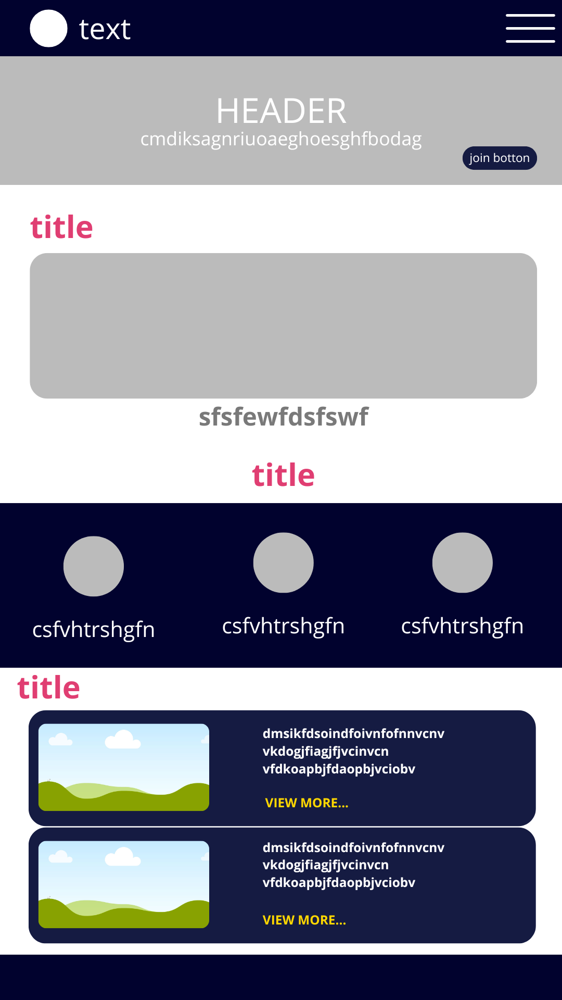
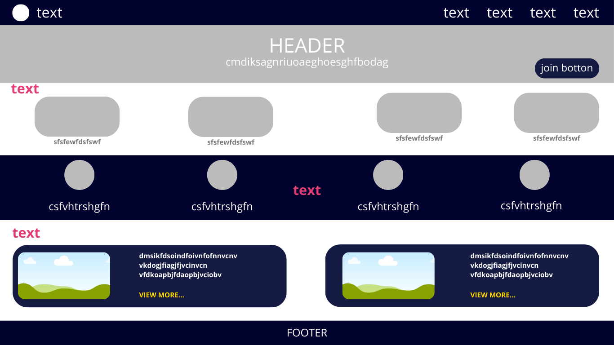

Project Description
This project is a website about K-pop, highlighting popular groups, iconic songs, and fan culture. It will include images, videos, and interactive elements to give visitors an engaging overview of K-pop.
Reason and Purpose
I chose this project because K-pop is a global phenomenon that combines music and the love for fandoms. This website allows me to practice web development while sharing something I like.
Scenarios
- Which K-pop groups are currently the most popular worldwide?
- Where can I watch iconic K-pop performances and music videos?
- How do fans participate in K-pop fandom culture?
Color Schema
Primary Color: #e03e72 (bright pink, used for headings, titles, and important elements)
Secondary Color: #01022e (dark blue, used for background)
Accent Color: #FFD700 (golden yellow, used for highlights, buttons and links)
These colors reflect the vibrant and energetic feeling of K-pop while keeping good readability.
Typography
Font 1: Inter (for body text)
Font 2: Hedvig Letters Sans (for headings)
This combination keeps the text clean, modern, and easy to read.
Wireframe
Mobile View

Desktop View
